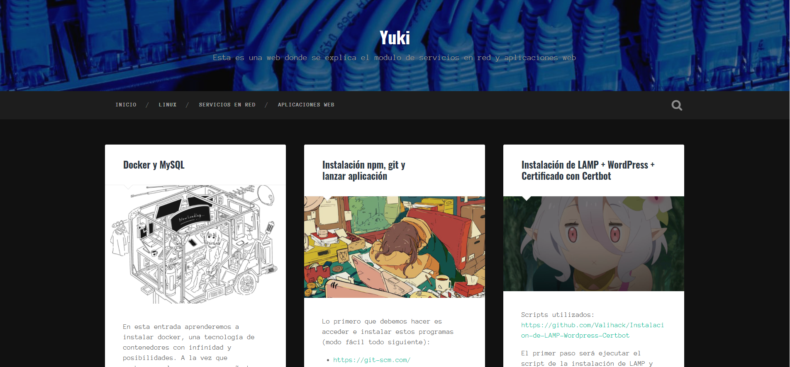
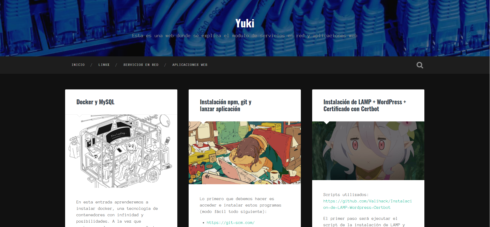

Proposito del blog
En este blog hablaremos de tecnología, haremos tutoriales de instalación de los recursos que nos vayan "enseñando" en clase y profundizaremos un poco más.
En este blog hablaremos de tecnología, haremos tutoriales de instalación de los recursos que nos vayan "enseñando" en clase y profundizaremos un poco más.
